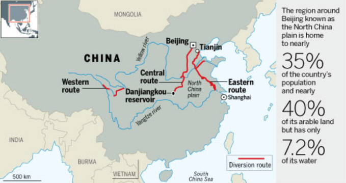
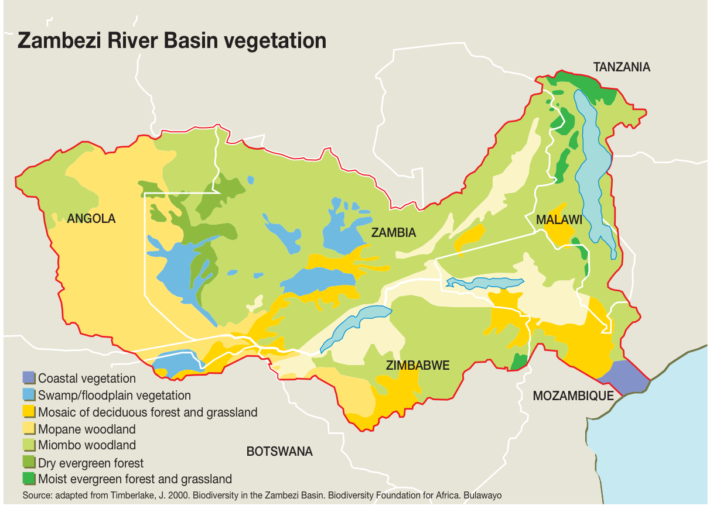
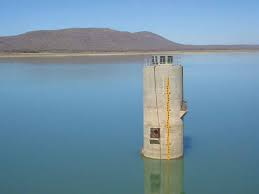

<!DOCTYPE HTML>
<html lang="en"></html>
<html>
    <head>
        <title>Global Nighttime Lights Trend</title>
        <meta charset="utf-8">
        <style type="text/css">
            html {
                height: 100%;
            }
            body {
                margin: 0;
                padding: 0;
                background: #000033 url(./image/loading.gif) center center no-repeat;
                color: #ffffff;
                font-family: sans-serif;
                font-size: 12px;
                line-height: 20px;
                height: 100%;
            }
            #info {
                font-size: 11px;
                position: absolute;
                bottom: 5px;
                background-color: rgba(0, 0, 0, 0.8);
                border-radius: 3px;
                right: 10px;
                padding: 10px;
            }
            #title {
                position: absolute;
                width: 300px;
                font-family: 'Open Sans', 'Helvetica', sans-serif; /* 更现代的字体组合 */
                font-weight: 100; /* 强调品牌标识 */
                color: #C7F3FF; /* 水蓝色系 */
                text-shadow: 1px 1px 3px rgba(0,68,85,0.5); /* 水纹投影效果 */
                letter-spacing: 0.1em;
                top: 20px;
                left: 20px;
                background-color: rgba(0, 0, 0, 0.2);
                padding: 10px;
                font-size: 14px;
            }
            #subtitle {
                position: absolute;
                font-family:  sans-serif; 
                color: #E6F7FF;
                background: linear-gradient(90deg, rgba(0,40,60,0.8) 0%, transparent 100%);
                line-height: 1.2;
                font-size: 14px;
                top: 60px;
                width: 400px;
                left: 20px;
                background-color: rgba(0, 0, 0, 0.2);
                padding: 0px;
            }
            #lines {
                position: absolute;
                bottom: 5px;
                width: 300px;
                left: 10px;
                background-color: rgba(0, 0, 0, 0.2);
                font: 13px/13px Georgia;
                padding: 15px;
            }
            /* 添加右侧栏样式 */
            #sidebar {
                position: fixed;
                right: -460px; /* 调整初始位置 */
                top: 0;
                width: 400px; /* 增加宽度到400px */
                height: 100vh; /* 使用视口高度 */
                background: rgba(0, 0, 51, 0.85);
                color: #E6F7FF;
                padding: 25px; /* 增加内边距 */
                transition: right 0.3s ease;
                z-index: 1000;
                border-left: 2px solid #00B4D8;
                box-shadow: -2px 0 10px rgba(0, 0, 0, 0.3);
                display: flex;
                flex-direction: column;
            }
            #sidebar.active {
                right: 0;
            }
            #sidebar-content {
                display: none;
                flex: 1;
                overflow-y: auto; /* 添加滚动条 */
                padding-right: 10px; /* 为滚动条留出空间 */
            }
            #sidebar-content.active {
                display: block;
            }
            #sidebar-content::-webkit-scrollbar {
                width: 6px;
            }
            #sidebar-content::-webkit-scrollbar-track {
                background: rgba(0, 0, 0, 0.1);
                border-radius: 3px;
            }
            #sidebar-content::-webkit-scrollbar-thumb {
                background: #00B4D8;
                border-radius: 3px;
            }
            #sidebar-content::-webkit-scrollbar-thumb:hover {
                background: #0096C7;
            }
            .close-btn {
                position: absolute;
                top: 10px;
                right: 10px;
                cursor: pointer;
                font-size: 20px;
                color: #00B4D8;
                transition: color 0.2s ease;
            }
            .close-btn:hover {
                color: #C7F3FF;
            }
            #sidebar h2 {
                color: #C7F3FF;
                margin-bottom: 20px;
                font-size: 22px;
                border-bottom: 1px solid rgba(0, 180, 216, 0.3);
                padding-bottom: 10px;
            }
            /* 添加面板样式 */
            .panel-tabs {
                display: flex;
                margin-bottom: 15px;
                border-bottom: 1px solid rgba(0, 180, 216, 0.3);
            }
            .panel-tab {
                padding: 10px 20px;
                cursor: pointer;
                color: #E6F7FF;
                border-bottom: 2px solid transparent;
                transition: all 0.3s ease;
            }
            .panel-tab.active {
                color: #00B4D8;
                border-bottom: 2px solid #00B4D8;
            }
            .panel-content {
                display: none;
                padding: 15px 0;
                margin-bottom: 20px;
                position: relative;
                min-height: calc(100vh - 200px);
            }
            .panel-content.active {
                display: block;
            }
            .panel-content h3 {
                color: #00B4D8;
                margin: 15px 0 10px 0;
                font-size: 16px;
            }
            .panel-content p {
                color: #E6F7FF;
                line-height: 1.6;
                margin: 0 0 15px 0;
            }
            /* 添加图片样式 */
            .location-image {
                width: 100%;
                height: 200px; /* 增加图片高度 */
                object-fit: cover;
                border-radius: 4px;
                margin-bottom: 20px; /* 增加底部间距 */
                border: 1px solid rgba(0, 180, 216, 0.3);
            }
            .location-description {
                background: rgba(0, 180, 216, 0.1);
                padding: 25px; /* 增加内边距 */
                border-radius: 4px;
                margin-top: 15px;
                font-size: 14px;
                line-height: 1.8;
            }
            /* 添加聊天框样式 */
            .chat-box {
                position: relative;
                background: rgba(0, 0, 51, 0.95);
                padding: 25px; /* 增加内边距 */
                border-top: 1px solid rgba(0, 180, 216, 0.3);
                margin-top: 25px;
                border-radius: 4px;
            }
            .chat-input {
                width: calc(100% - 90px); /* 调整输入框宽度 */
                padding: 12px; /* 增加输入框内边距 */
                background: rgba(0, 180, 216, 0.1);
                border: 1px solid #00B4D8;
                border-radius: 4px;
                color: #E6F7FF;
                margin-bottom: 12px;
                display: inline-block;
                font-size: 14px; /* 增加字体大小 */
            }
            .chat-input:focus {
                outline: none;
                border-color: #C7F3FF;
            }
            .chat-response {
                color: #C7F7FF;
                font-size: 13px;
                margin-top: 10px;
                display: none;
                padding: 10px;
                background: rgba(0, 180, 216, 0.1);
                border-radius: 4px;
            }
            .chat-response.active {
                display: block;
            }
            .send-btn {
                background: #00B4D8;
                color: #E6F7FF;
                border: none;
                padding: 8px 15px;
                border-radius: 4px;
                cursor: pointer;
                transition: background 0.3s ease;
                float: right;
            }
            .send-btn:hover {
                background: #0096C7;
            }
            /* 添加旋转按钮样式 */
            .rotationToggle {
                background: #0096C7;
                color: #E6F7FF;
                border: none;
                padding: 8px 15px;
                border-radius: 4px;
                cursor: pointer;
                transition: background 0.3s ease;
                width: 80%;
                font-size: 12px;
            }
            .rotationToggle:hover {
                background: #00B4D8;
            }
            .rotation-button-container {
                position: absolute;
                bottom: 0;
                left: 0;
                right: 0;
                padding: 15px 0;
                text-align: center;
                background: linear-gradient(to bottom, transparent, rgba(0, 0, 51, 0.95));
            }
        </style>
        <script>
            var _hmt = _hmt || [];
            (function() {
                var hm = document.createElement("script");
                hm.src = "https://hm.baidu.com/hm.js?7801c1a01824a26ce1b3eecaff452cab";
                var s = document.getElementsByTagName("script")[0]; 
                s.parentNode.insertBefore(hm, s);
            })();
            </script>
    </head>

    <body>
        <div id="container"></div>
        <!-- 添加右侧栏 -->
        <div id="sidebar">
            <span class="close-btn">&times;</span>
            <div id="sidebar-content">
                <h2>Location Details</h2>
                <div class="panel-tabs">
                    <div class="panel-tab active" data-panel="panel1">China</div>
                    <div class="panel-tab" data-panel="panel2">Zambia</div>
                    <div class="panel-tab" data-panel="panel3">Botswana</div>
                </div>
                <div class="panel-content active" id="panel1">
                    <h3>China</h3>
                    
                    <p style="font-size: 11px; color: #888; margin-top: -15px; margin-bottom: 15px;">Source: Ministry of Water Resources of China</p>
                    <p>High level in water governance index</p>
                    <div class="location-description">
                        China has implemented comprehensive water management policies, including the South-to-North Water Diversion Project and strict water pollution control measures. The country has achieved significant progress in water resource management and environmental protection.
                    </div>
                    <!-- 添加聊天框 -->
                    <div class="chat-box">
                        <input type="text" class="chat-input" placeholder="Ask about China...">
                        <button class="send-btn">Send</button>
                        <div class="chat-response"></div>
                    </div>
                    <!-- 添加旋转控制按钮 -->
                    <div class="rotation-button-container">
                        <button class="rotationToggle">Start Rotation</button>
                    </div>
                </div>
                <div class="panel-content" id="panel2">
                    <h3>Zambia</h3>
                    
                    <p style="font-size: 11px; color: #888; margin-top: -15px; margin-bottom: 15px;">Source: Zambia Water Resources Management Authority</p>
                    <p>Middle level in water governance index</p>
                    <div class="location-description">
                        Zambia faces challenges in water resource management, particularly in rural areas. The country is working on improving water access and implementing sustainable water management practices through various government initiatives.
                    </div>
                    <!-- 添加聊天框 -->
                    <div class="chat-box">
                        <input type="text" class="chat-input" placeholder="Ask about Zambia...">
                        <button class="send-btn">Send</button>
                        <div class="chat-response"></div>
                    </div>
                    <!-- 添加旋转控制按钮 -->
                    <div class="rotation-button-container">
                        <button class="rotationToggle">Start Rotation</button>
                    </div>
                </div>
                <div class="panel-content" id="panel3">
                    <h3>Botswana</h3>
                    
                    <p style="font-size: 11px; color: #888; margin-top: -15px; margin-bottom: 15px;">Source: Department of Water Affairs, Botswana</p>
                    <p>A part of Zambezi River Basin</p>
                    <div class="location-description">
                        As part of the Zambezi River Basin, Botswana plays a crucial role in regional water management. The country focuses on sustainable water use and participates in transboundary water management initiatives with neighboring countries.
                    </div>
                    <!-- 添加聊天框 -->
                    <div class="chat-box">
                        <input type="text" class="chat-input" placeholder="Ask about Botswana...">
                        <button class="send-btn">Send</button>
                        <div class="chat-response"></div>
                    </div>
                    <!-- 添加旋转控制按钮 -->
                    <div class="rotation-button-container">
                        <button class="rotationToggle">Start Rotation</button>
                    </div>
                </div>
            </div>
        </div>

        <!-- <div id="title">
            WAVES
        </div> -->
 <!--  -->
        <div id="title" style="line-height:1.25;">
            <p>Water governance Assessment through Visualizing Environmental Stakeholders (WAVES)</p>
        </div>

        <div id="subtitle" style="position: absolute; top: 100px; left: 10px; width: 300px; color: #C7F3FF; font-size: 14px; text-align: left; background-color: rgba(0, 0, 0, 0.3); padding: 10px 20px; border-radius: 5px; pointer-events: none;">
            This visualization shows Global Water Security Index. Click on markers to view location details, and chat with the bot to get more information.
        </div>

        <div id="copyright" style="position: fixed; bottom: 20px; left: 20px; color: #888; font-size: 11px; background-color: rgba(0, 0, 0, 0.2); padding: 5px 10px; border-radius: 3px;">
            © 2025 WAVES Teams. All rights reserved.
        </div>

        <!-- <div id="info">
            Created by Adam Zhou
            <span class="bull">&bull;</span>
            2021-03-12
        </div> -->

        <!-- <div id="lines">
            An individual visualization project of CASA0003 Digital Visualization. Get code at <a href="https://github.com/AdamZhou3/NighttimeLightTrend">GitHub</a>
        </div> -->

        <script src="src/Detector.js"></script>
        <script src="src/three.js"></script>
        <script src="src/Tween.js"></script>
        <script src="src/OrbitControls.js"></script>
        <script type="text/javascript">

        if(!Detector.webgl){
            Detector.addGetWebGLMessage();
        } else {
            //define shaders for halo and earth--------------------------------------------------------
            var Shaders = {
                'earth' : {
                uniforms: {
                    'texture': { type: 't', value: null }
                },
                vertexShader: [
                    'varying vec3 vNormal;',
                    'varying vec2 vUv;',
                    'void main() {',
                    'gl_Position = projectionMatrix * modelViewMatrix * vec4( position, 1.0 );',
                    'vNormal = normalize( normalMatrix * normal );',
                    'vUv = uv;',
                    '}'
                ].join('\n'),
                fragmentShader: [
                    'uniform sampler2D texture;',
                    'varying vec3 vNormal;',
                    'varying vec2 vUv;',
                    'void main() {',
                    'vec3 diffuse = texture2D( texture, vUv ).xyz;',
                    'float intensity = 1.05 - dot( vNormal, vec3( 0.0, 0.0, 1.0 ) );',
                    'vec3 atmosphere = vec3( 1.0, 1.0, 1.0 ) * pow( intensity, 10.0 );', //earth fog
                    'gl_FragColor = vec4( diffuse + atmosphere, 1.0 );',
                    '}'
                ].join('\n')
                },
                'halo' : {
                uniforms: {},
                vertexShader: [
                    'varying vec3 vNormal;',
                    'void main() {',
                    'vNormal = normalize( normalMatrix * normal );',
                    'gl_Position = projectionMatrix * modelViewMatrix * vec4( position, 1.0 );',
                    '}'
                ].join('\n'),
                fragmentShader: [
                    'varying vec3 vNormal;',
                    'void main() {',
                    'float intensity = pow( 0.8 - dot( vNormal, vec3( 0, 0, 1.0 ) ), 12.0 );',
                    'gl_FragColor = vec4( 1.0, 1.0, 1.0, 1.0 ) * intensity;',
                    '}'
                ].join('\n')
                }
            };

            // create scene, camera, and controls -----------------------------------------------------------
            var scene = new THREE.Scene();
            // scene.background = new THREE.Color(0xffffff);  // Set background to white

            var camera = new THREE.PerspectiveCamera(50, window.innerWidth/ window.innerHeight, 0.1, 1000); // fov angle; h/w; near ;far
            camera.position.set(0, 0.6, 1.5); //Y is height

            var renderer = new THREE.WebGLRenderer();
            renderer.setSize( window.innerWidth, window.innerHeight );

            document.body.appendChild( renderer.domElement );
            // controls
            var controls = new THREE.OrbitControls(camera, renderer.domElement);
            controls.update();

            controls.autoRotate = false;
            controls.autoRotateSpeed = 2; //auto rotate

            controls.enablePan = false; // ban pan
            controls.enableZoom = true; // ban zoom

            // add an ambient light
            var ambient = new THREE.AmbientLight(0xffffff, 5 ); //color, intensity
            scene.add(ambient);

            // create halo--------------------------------------------------------------------------------
            var shader_halo =Shaders["halo"];
            var uniforms = THREE.UniformsUtils.clone(shader_halo.uniforms);
            var material = new THREE.ShaderMaterial({
                uniforms: uniforms,
                vertexShader: shader_halo.vertexShader,
                fragmentShader: shader_halo.fragmentShader,
                side: THREE.BackSide,
                blending: THREE.AdditiveBlending,
                transparent: true
            });

            var halo = new THREE.Mesh(
                new THREE.SphereGeometry(0.83, 50, 50), //radius , widthSegments , heightSegments
                material
            )
            scene.add(halo);

            // create earth ------------------------------------------------------------------------------
            var shader_earth = Shaders['earth'];
            var uniforms = THREE.UniformsUtils.clone(shader_earth.uniforms);
            uniforms['texture'].value = new THREE.TextureLoader().load('./image/world_masked.jpg');

            var material = new THREE.ShaderMaterial({
                uniforms: uniforms,
                vertexShader: shader_earth.vertexShader,
                fragmentShader: shader_earth.fragmentShader
            });

            var earth = new THREE.Mesh(
                new THREE.SphereGeometry(0.66, 50 , 50),
                material
            );
            scene.add(earth);

            // Add markers on Earth
            function createMarker(color) {
                const markerGeometry = new THREE.SphereGeometry(0.01, 16, 16);
                const markerMaterial = new THREE.MeshBasicMaterial({ color: color });
                return new THREE.Mesh(markerGeometry, markerMaterial);
            }

            // Create text sprite for location labels
            function createTextSprite(text) {
                const canvas = document.createElement('canvas');
                const context = canvas.getContext('2d');
                canvas.width = 256;
                canvas.height = 64;
                
                context.font = 'bold 24px Arial';
                context.fillStyle = '#FFFF00';
                context.textAlign = 'center';
                context.textBaseline = 'middle';
                context.fillText(text, canvas.width/2, canvas.height/2);
                
                const texture = new THREE.CanvasTexture(canvas);
                const spriteMaterial = new THREE.SpriteMaterial({ map: texture });
                const sprite = new THREE.Sprite(spriteMaterial);
                
                sprite.scale.set(0.2, 0.05, 1);
                return sprite;
            }

            // Create three markers with different colors
            const marker1 = createMarker(0xFFFF00); // Bright yellow marker
            const marker2 = createMarker(0xFFFF00); // Bright yellow marker
            const marker3 = createMarker(0xFFFF00); // Bright yellow marker

            // Create text sprites for labels
            const label1 = createTextSprite('China');
            const label2 = createTextSprite('Zambia');
            const label3 = createTextSprite('Botswana');

            // Position markers on Earth's surface
            // Using spherical coordinates (radius, phi, theta)
            const radius = 0.66; // Same as Earth's radius
            const phi1 = Math.PI * -0.3; // 90 degrees
            const theta1 = Math.PI * 0.4; // 90 degrees
            const phi2 = Math.PI * 0.55; // 54 degrees
            const theta2 = Math.PI * -0.15; // 126 degrees
            const phi3 = Math.PI * 0.3; // 126 degrees 经度
            const theta3 = Math.PI * 0.5; // 54 degrees 纬度

            // Convert spherical coordinates to Cartesian
            marker1.position.set(
                radius * Math.sin(phi1) * Math.cos(theta1),
                radius * Math.cos(phi1),
                radius * Math.sin(phi1) * Math.sin(theta1)
            );
            marker2.position.set(
                radius * Math.sin(phi2) * Math.cos(theta2),
                radius * Math.cos(phi2),
                radius * Math.sin(phi2) * Math.sin(theta2)
            );
            marker3.position.set(
                radius * Math.sin(phi3) * Math.cos(theta3),
                radius * Math.cos(phi3),
                radius * Math.sin(phi3) * Math.sin(theta3)
            );

            // Position labels slightly above markers
            label1.position.copy(marker1.position).multiplyScalar(1.1);
            label2.position.copy(marker2.position).multiplyScalar(1.1);
            label3.position.copy(marker3.position).multiplyScalar(1.1);

            // Add markers and labels to scene
            scene.add(marker1);
            scene.add(marker2);
            scene.add(marker3);
            scene.add(label1);
            scene.add(label2);
            scene.add(label3);

            // 添加点击事件处理
            const raycaster = new THREE.Raycaster();
            const mouse = new THREE.Vector2();
            const sidebar = document.getElementById('sidebar');
            const sidebarContent = document.getElementById('sidebar-content');
            const closeBtn = document.querySelector('.close-btn');
            const panelTabs = document.querySelectorAll('.panel-tab');
            const panels = document.querySelectorAll('.panel-content');

            // 面板切换功能
            panelTabs.forEach(tab => {
                tab.addEventListener('click', () => {
                    // 移除所有活动状态
                    panelTabs.forEach(t => t.classList.remove('active'));
                    panels.forEach(p => p.classList.remove('active'));
                    
                    // 添加当前活动状态
                    tab.classList.add('active');
                    document.getElementById(tab.dataset.panel).classList.add('active');
                });
            });

            // 添加旋转控制功能
            const rotationToggles = document.querySelectorAll('.rotationToggle');
            let isRotating = false;

            rotationToggles.forEach(toggle => {
                toggle.addEventListener('click', () => {
                    isRotating = !isRotating;
                    controls.autoRotate = isRotating;
                    // 更新所有按钮的文本和样式
                    rotationToggles.forEach(btn => {
                        btn.textContent = isRotating ? 'Stop Rotation' : 'Start Rotation';
                        btn.style.background = isRotating ? '#00B4D8' : '#0096C7';
                    });
                });
            });

            // 点击事件处理
            window.addEventListener('click', onMouseClick, false);

            function onMouseClick(event) {
                // 计算鼠标在归一化设备坐标中的位置
                mouse.x = (event.clientX / window.innerWidth) * 2 - 1;
                mouse.y = -(event.clientY / window.innerHeight) * 2 + 1;

                // 更新射线投射器
                raycaster.setFromCamera(mouse, camera);

                // 检测射线与标记点的相交
                const intersects = raycaster.intersectObjects([marker1, marker2, marker3]);

                if (intersects.length > 0) {
                    const clickedMarker = intersects[0].object;
                    let panelIndex;
                    
                    // 确定点击的是哪个标记点
                    if (clickedMarker === marker1) panelIndex = 0;
                    else if (clickedMarker === marker2) panelIndex = 1;
                    else if (clickedMarker === marker3) panelIndex = 2;

                    // 显示侧边栏和对应的面板
                    sidebar.classList.add('active');
                    sidebarContent.classList.add('active');
                    
                    // 切换到对应的面板
                    panelTabs[panelIndex].click();
                }
            }

            // 关闭按钮事件
            closeBtn.addEventListener('click', () => {
                sidebar.classList.remove('active');
                sidebarContent.classList.remove('active');
            });

            // animate ---------------------------------------------------------------------------------------
            function animate() {
                requestAnimationFrame( animate );
                controls.update();
                renderer.render( scene, camera );
            };
            animate();

            // resize window settings -------------
            window.addEventListener('resize', onWindowResize, false);

            function onWindowResize( event ) {
                camera.aspect = container.offsetWidth / container.offsetHeight;
                camera.updateProjectionMatrix();
                renderer.setSize( container.offsetWidth, container.offsetHeight );
            }

            // 添加聊天功能
            const chatInputs = document.querySelectorAll('.chat-input');
            const chatResponses = document.querySelectorAll('.chat-response');
            const sendBtns = document.querySelectorAll('.send-btn');

            // 地点描述数据
            const locationDescriptions = {
                panel1: {
                    keywords: ['water', 'governance', 'index', 'level', 'high'],
                    response: "China has achieved a high level in water governance index, demonstrating strong water management practices and policies."
                },
                panel2: {
                    keywords: ['water', 'governance', 'index', 'level', 'middle'],
                    response: "Zambia maintains a middle level in water governance index, showing moderate water management capabilities."
                },
                panel3: {
                    keywords: ['zambezi', 'river', 'basin', 'part'],
                    response: "Botswana is an important part of the Zambezi River Basin, contributing to regional water management."
                }
            };

            function handleChat(panelId) {
                const chatInput = document.querySelector(`#${panelId} .chat-input`);
                const chatResponse = document.querySelector(`#${panelId} .chat-response`);
                const input = chatInput.value.toLowerCase();
                const description = locationDescriptions[panelId];

                if (input && description.keywords.some(keyword => input.includes(keyword))) {
                    chatResponse.textContent = description.response;
                    chatResponse.classList.add('active');
                } else {
                    chatResponse.textContent = "Please ask about water governance, index levels, or river basin information.";
                    chatResponse.classList.add('active');
                }
            }

            // 为每个聊天框添加事件监听
            sendBtns.forEach((btn, index) => {
                const panelId = `panel${index + 1}`;
                btn.addEventListener('click', () => handleChat(panelId));
            });

            chatInputs.forEach((input, index) => {
                const panelId = `panel${index + 1}`;
                input.addEventListener('keypress', (e) => {
                    if (e.key === 'Enter') {
                        handleChat(panelId);
                    }
                });
            });

            // 切换面板时清空聊天
            panelTabs.forEach(tab => {
                tab.addEventListener('click', () => {
                    chatInputs.forEach(input => input.value = '');
                    chatResponses.forEach(response => response.classList.remove('active'));
                });
            });
        }
        </script>
    </body>
</html>
